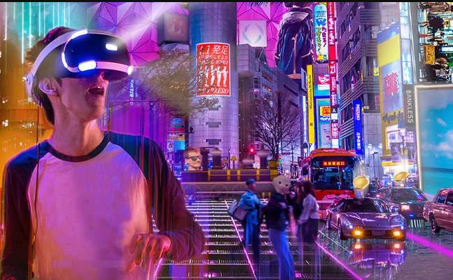

MetaVerso é uma tentativa de expandir virtualmente da nossa vida, como se existisse um outro universo onde existe uma espécie de uma personificação pessoal que pode interagir nesse mundo das mais diversas maneiras, como: estudar, comprar e vender produtos, visitar locais, participar de evento e shows, explorar, fazer amizades etc.
Varias empresas estão desenvolvendo explorando esse possível mercado mas de longe a que está mais engajada é a Meta anteriormente conhecida como Facebook, Eles lançaram o Horizon Worlds, um espaço VR para vários jogadores que permite que os jogadores descubram novos lugares, interajam com amigos, resolvam quebra-cabeças, joguem e realizem atividades sociais, além de fazer vários tipos de óculos que visam cada vez mais integrar o MetaVerso na vida das pessoas.